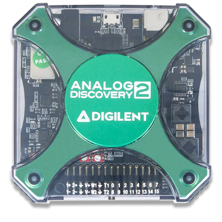
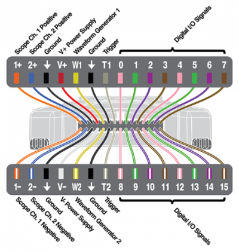
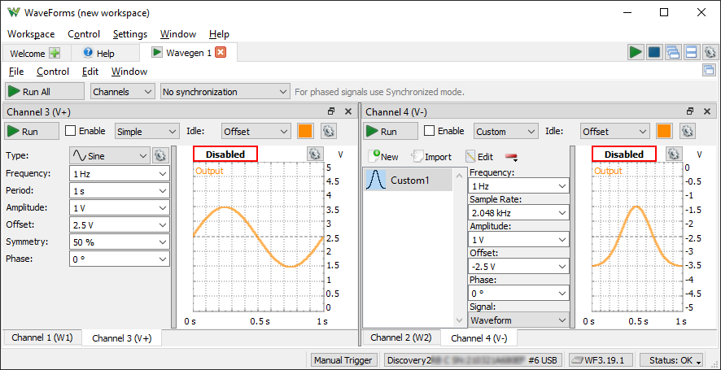

Getting started with the Analog Discovery 2
1. Hardware
To set up the Analog Discovery 2:
- First, install the Digilent WaveForms software on your PC. See Installer Details for more information.
- Connect the Analog Discovery 2 to your PC using a USB cable and optional connect 5 V DC auxiliary supply.

Pin-out:

| |
Recommended operating conditions |
Absolute maximum ratings |
| Oscilloscope (1+,1-,2+,2-) |
±50 V differential, ±25 V single ended, 1.04M |
±50 V |
| Wavegen (W1,W2) |
±5 V, 10 mA, 0R |
±5.8 V, 50 mA |
| Power Supplies (V+,V-) |
0.5 ... 5 V, -0.5 ... -5 V |
+6 V, -6 V |
| USB powered |
|
700 mA / channel, 500 mW total |
| Auxiliary powered |
|
700 mA or 2.1 W / channel |
| Triggers, Digital IO (T1,T2,0,1,2,...) |
LVCMOS 3.3 V, 4 mA |
± 20 V |
| USB Supply |
|
1A 4.5V ... 5.5V |
| Auxiliary Supply |
|
2A 4.11V ... 5.76V |
For more information visit the Analog Discovery 2 reference page.
2. WaveForms Software
See Installer Details for information on installing WaveForms.
See WaveForms for information on using the
software.
3. Troubleshooting
If the device is not detected by the WaveForms application or experience random disconnects usually indicates contact problem. In this case, try using the original USB cable the device or other USB cables you have at hand, try using other USB port and hub, try other computer or 5V DC auxiliary supply for the device.
Another cause of undetected device may be the USB driver. In Windows Device Manager under "Universal Serial Bus controllers" look "USB Serial Converter". In Properties under Driver tab make sure the driver version is "2.12.36.4" or newer, under Advanced tab make sure the "Load VCP" is unchecked.
If you receive the error message "Communication with device failed"
or "Device configuration failed":
- Remove all the attached components and wires from the Analog Discovery 2.
- Verify that the USB cable is attached correctly.
- Reconnect WaveForms to the Analog Discovery 2 and, without opening any instruments, verify that the WaveForms system monitor is displaying voltage and current levels.
The Analog Discovery 2's system monitor displays the voltage, current, and temperature. In the main window, click the button in the status bar to show this information.

When no instrument is running, the device power consumption is around 2 W (400mA). Depending on the usage, consumption can increase subject to the following limitations:
- At 500 mA, the application interface displays a warning because this is the maximum allowed by the USB specification.
- At 1 A, the Analog Discovery 2 device stops in order to prevent damage, and the application displays the “Communication with the device failed” error message.
- See Power Supplies for information regarding limitations.
If you receive the previously mentioned error message, or if the voltage is less than 4.5 V, try the following options:
- Try to use 5 V DC 2.5 A switching power supply.
- Try to use a different USB cable and computer plug.
- Use the USB plug on the back of the PC, not the one on the front panel.
- Use a short cable, do not use a long cable or cable extender.
- Use a powered USB-hub, avoid using an unpowered hub.
- Use a USB-Y cable to load power from two plugs.
- Reduce the current consumption on AWG, V+, and/or V-.
4. Oscilloscope
The Analog Discovery 2 has two differential oscilloscope input channels.
Specifications:
- The 0.5dB input bandwidth is 10 MHz.
- The positive and negative inputs have an impedance to ground of 1.04 MΩ in parallel with 24 pF.
- The ADC is 14 bits and 100 MSps, Analog Devices AD9648.
- The absolute maximum input voltage is ±50 V.
- The buffer can be up to 16 KiS (default is 8 KiS) on two channels.
- The inputs have two gain stages, with ~3 mV and ~300 uV resolution. See the table below:
| |
Low gain |
High gain |
| Range |
> 500 mV/div |
<= 500 mV/div |
| Differential input voltage |
N/A |
-5 V to +5 V |
| Common mode input voltage |
N/A |
-20 V to +5 V |
| Positive and negative input voltage to GND |
±25 V |
N/A |
- For more information visit the resource center
5. Arbitrary Waveform Generator
The Analog Discovery 2 is equipped with two Arbitrary Waveform Generators channels. Verify the voltage on the Waveform Generator channels before connecting it to a circuit.
Specifications:
- The 0.5dB output bandwidth is 4 MHz.
- The output impedance is zero.
- The drive current depends on voltage, at lest 10 mA and at most ~50mA.
- The DAC is 14 bits and 100 MSps, Analog Devices AD9717.
- The maximum output is 10 Vpk2pk, between -5 V and +5 V.
- The resolution is ~0.7 mV for amplitudes above 1 V, and ~0.18 mV for amplitudes of 1 V and lower.
- When a channel is closed or disabled, the output is not in high impedance but close to 0 V.
- The carrier buffer can be up to 16 KiS (default is 4 KiS). The AM and FM buffer is 2 KiS on two channels.
- The stereo audio jack outputs the AWG signals. AWG 1 outputs on the right channel and AWG 2 on the left channel.
- For more information visit the resource center
6. Power Supplies
The Analog Discovery 2 has two adjustable power supplies.
NOTE: When the power supplies need to drive high capacitive loads, start the supply before connecting the load.
Specifications:
- The positive power supply voltage output range is from 0 to 5 V.
- The negative power supply voltage output range is from 0 to -5 V.
- The power supplies can provide 700 mA or 2.1 W current on each channel. When powered from USB, the total power sum of the two channels is limited to 500 mW.
- The power supplies have soft start-adjustment of about 200mV/ms.
The power supplies can be used as slow AWG channels with the 6th device configuration.

7. Digital I/O
The Analog Discovery 2 has 16 digital I/O (DIO 0-15) and 2 trigger I/O pins.
Specifications:
- The digital pins are supplied at 3.3 V, LVCMOS3V3 standard.
- The pins have a 4 mA drive strength, slow slew rate Xilinx Spartan6-1L output.
- The pins have a 220Ω series PTCs (PRG18BB221MB1RB) and diodes (DB3S406F) to GND and 3.3V, having protection between -20 V and +20 V.
- The pins can output push-pull (PP), open-drain (OD), open-source (OS), and three-state (TS) signals. For OD and OS signals, use external pull-up or pull-down resistors.
- The generator/analyzer frequency is 100 MHz.
- The Logic Analyzer buffer can be up to 16 KiS (default is 4 KiS).
- The Pattern Generator custom buffer can be up to 16 KiS (default is 1 KiS).